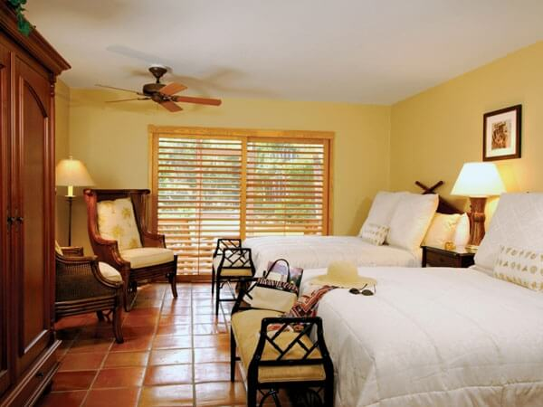
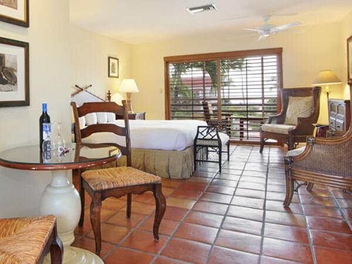
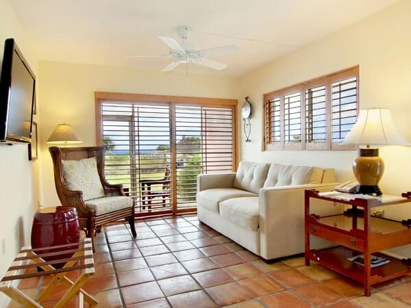

Choose your favorite accommodation from 30 intimate guest rooms, all with kitchenettes. Sip on a complimentary bottle of wine as you reconnect and relax on the private screened balcony overlooking the Gulf of Mexico, the heated pool and lush landscaping.

Partial Gulf View Room – Available on 1st Floor or Top Floor
Our spacious 370 square-foot guest rooms are all just steps from the Gulf of Mexico. Relax on your own private screened porch with a complimentary bottle of wine and enjoy the convenience of an in-room kitchenette.
Rates:
First Floor: $159.20 + taxes and fees per night.
Top Floor: $175.20 + taxes and fees per night.
• Two Comfortable Queen Beds or one King Bed
• Complimentary bottle of wine upon arrival
• Screened Porch with views of the gulf
• Daily complimentary continental breakfast
• 42" LCD Flat Panel TV
• Kitchenette, with refrigerator, microwave, small stove and coffee maker
• Luxury bath, with granite countertops
• High-speed Internet access
• Iron / ironing board
• In-room safe
• Lighted make-up mirror
• Hair dryer
• Daily newspaper
• Non-smoking guest rooms
• ADA accommodations available

Gulf View Room – Available on 1st Floor or Top Floor
This spacious 370 square-foot accommodation provides incredible views of the Gulf of Mexico. Enjoy this perfect beachfront retreat with kitchenette and small dining table perfect for two. Relax on the private screened porch with your complimentary bottle of wine.
Rates:
First Floor: $175.20 + taxes and fees per night.
Top Floor: $191.20 + taxes and fees per night.
• Two Queen beds or one King size bed
• Complimentary bottle of wine upon arrival
• Daily complimentary continental breakfast
• Full bathroom, with granite countertops
• Screened porch with incredible views of the Gulf
• 42" LCD Flat Panel TV
• Kitchenette, with refrigerator, microwave, small stove and coffee maker
• High-speed Internet access
• Iron / ironing board
• In-room safe
• Lighted make-up mirror
• Hair dryer
• Daily newspaper
• Non-smoking guest rooms
• ADA accommodations available

Gulf Front Suite – Available on 1st Floor or Top Floor
This 564-square-foot suites offers beautiful views of the Gulf of Mexico, with the beach just steps away from your room. Our intimate suites feature a warm inviting living area complete with a couch, cozy dining area and a kitchenette.
Rates:
First Floor: $215.20 + taxes and fees per night.
Top Floor: $231.20 + taxes and fees per night.
• Direct Gulf Views
• King Sized Bed
• Queen-sized sofa sleeper
• Gulf front private, screened porch
• Daily complimentary continental breakfast
• Complimentary bottle of wine upon arrival
• Kitchenette, with refrigerator, microwave, and small stove
• Full bathroom, with granite countertops
• 42" LCD Flat Screen TV
• High-speed Internet access
• Coffee maker
• Iron / ironing board
• In-room safe
• Lighted make-up mirror
• Hair dryer
• Daily newspaper
• Non-smoking guest rooms